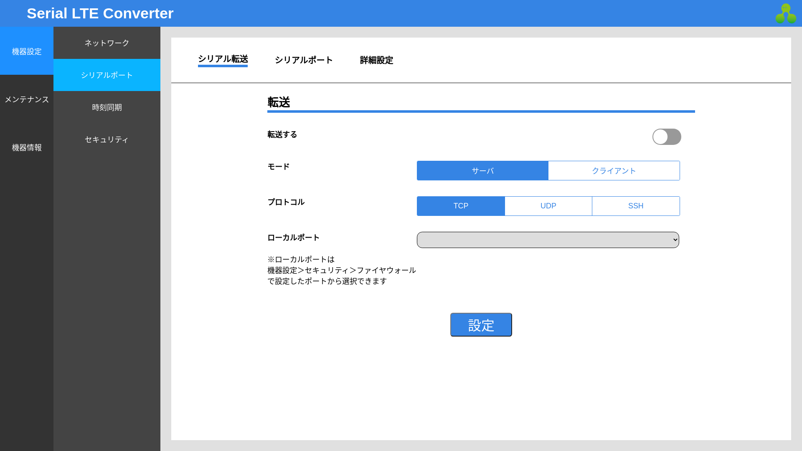
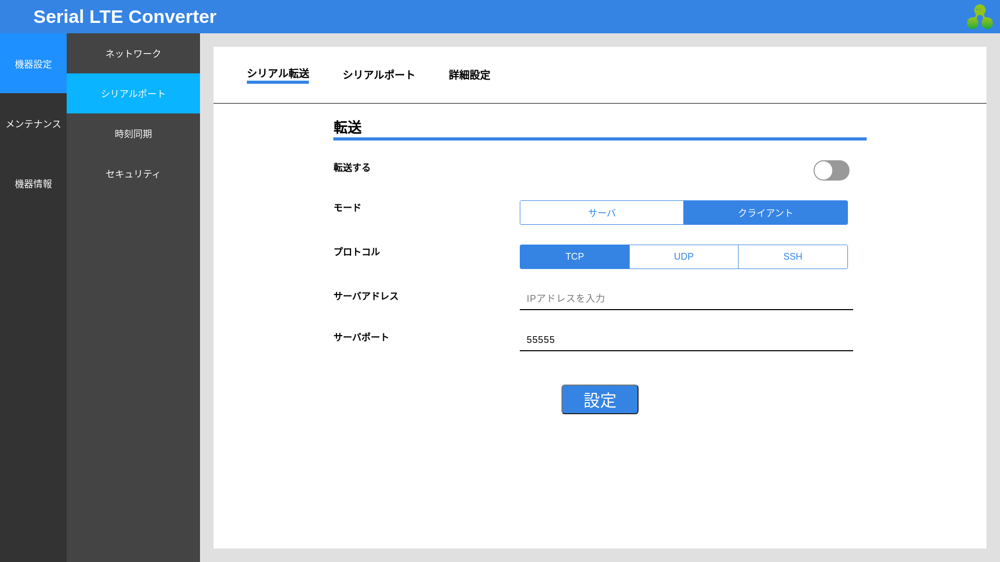
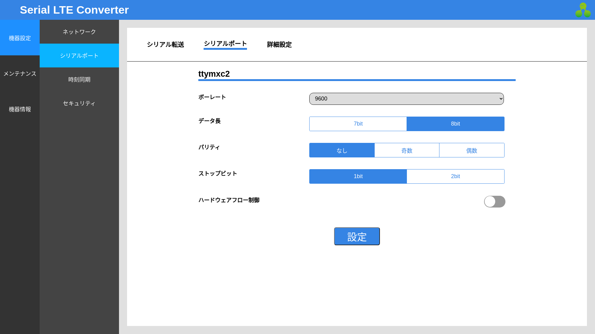
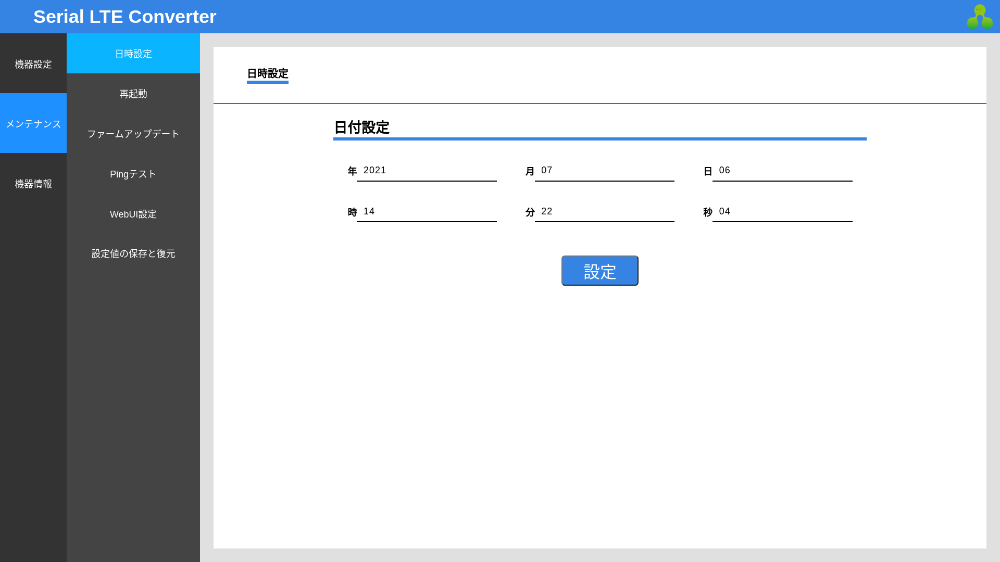
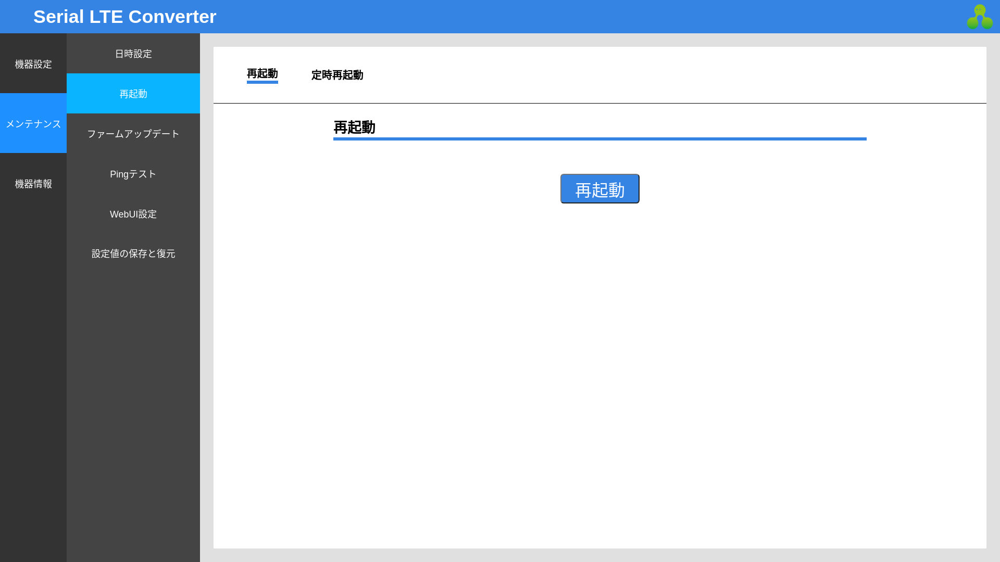
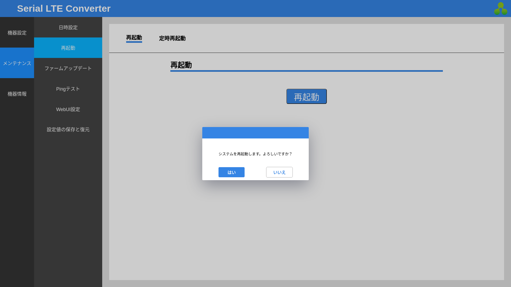
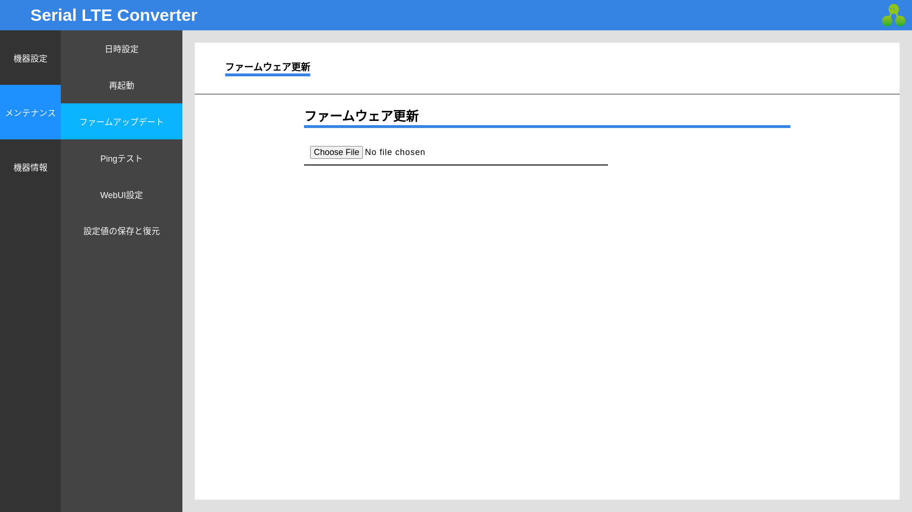
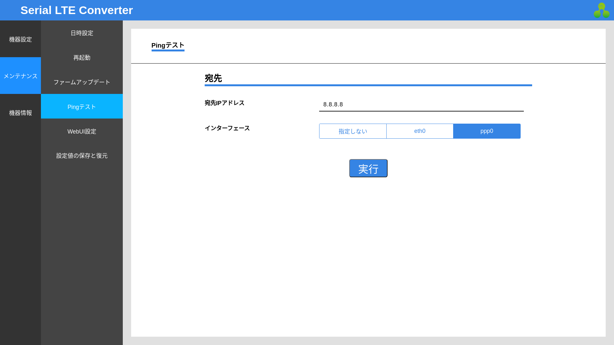

各種機能・設定
機器設定
ネットワーク設定
各種ネットワークの設定をすることができます。
Ethernet
イーサネットポートの設定ができます。設定をクリックすると反映されます。

LTE
LTEモジュールの設定ができます。設定をクリックすると保存されます。
保存した設定を反映するには、本体を再起動してください。
ネームサーバー
ネームサーバーのアドレスを設定できます。
| 設定 | 動作 |
|---|---|
| DHCP | DHCPクライアントが自動取得したネームサーバーアドレスを使用します。EthernetのIPアドレス取得方法をDHCPに設定すると動作します。 |
| PPP | PPPクライアントが自動取得したネームサーバーアドレスを使用します。LTE接続が正しく設定されていると動作します。 |
| 手動 | 入力したIPアドレスをネームサーバーとして参照します。 |
設定をクリックすると保存されます。
シリアル転送設定
シリアル転送機能の各種設定をすることができます。
シリアル転送
シリアル転送機能を使うと、RS-232Cポートに接続した機器のシリアルデータを、インターネット接続で転送することができます。
一方をサーバモード、他方をクライアントモードとして設定することで、通信を確立することができます。
サーバ
プロトコルとポート番号を設定することができます。転送するを有効にして設定をクリックすると、シリアル転送サーバが起動します。

クライアント
プロトコルとポート番号、接続先サーバのアドレスを設定することができます。転送するを有効にして設定をクリックすると、シリアル転送クライアントが起動します。

ローカルポートの選択
ローカルポートを選択するには、ファイヤーウォール設定より使用したいポート番号を追加する必要があります。TCPとSSHではtcp、UDPではudpの接続許可が必要です。
| プロトコル | インターフェース | ポート | IPアドレス制限方法/IPアドレス |
|---|---|---|---|
| tcp | ppp0 | 送信先:使用したいポート番号 | 任意 |
| udp | ppp0 | 送信先:使用したいポート番号 | 任意 |
SSH接続
プロトコルでSSHを選択した場合、クライアントではSSH公開鍵の生成、サーバーではクライアントで生成したSSH公開鍵の登録が必要です。
シリアルポート
RS-232Cシリアルポート(ttymxc2)の設定をすることができます。設定をクリックすると反映されます。

詳細設定
シリアル転送機能の設定をすることができます。設定をクリックすると反映されます。
時刻同期設定
時刻同期の設定をすることができます。デフォルトでは同期しないよう設定されています。
NTPを使った時刻同期
NTPサーバを使って時刻同期することができます。NTPサーバのアドレスを入力し、設定をクリックすると同期を開始します。
LTEモジュールを使った時刻同期
LTEモジュールの機能を使って時刻同期することができます。設定をクリックすると同期を開始します。

NTPサーバ機能
NTPサーバ機能を使うと、Serial LTE Converter自身をNTPサーバとして動作させることができます。
NTPサーバになるを有効にして設定をクリックすると、NTPサーバが起動します。ポート番号は123から変更できません。
セキュリティ
ファイヤーウォール
ファイヤーウォール設定では、許可したい外部からのネットワーク接続を追加・編集・削除することができます。
許可していない外部からの接続は拒否されます。
デフォルトでは、次のように設定されています。いずれもIPアドレスの制限はされていません。
| プロトコル | インターフェース | ポート | 用途 |
|---|---|---|---|
| all | lo | - | シリアル転送機能の内部動作で必要 |
| udp | eth0 | 送信先:123 | NTPサーバーとして動作するために必要 |
| udp | eth0 | 送信元:53 | Ethernetでネームサーバーへアクセスするために必要 |
| udp | ppp0 | 送信元:53 | LTEでネームサーバーへアクセスするために必要 |
| icmp | eth0 | - | Ethernet接続時の疎通確認のため |
| tcp | eth0 | 送信先:54321 | Ethernet経由でのWebUIへのアクセス許可 |
設定追加をクリックすると、許可する接続を追加することができます。
シリアル転送機能のローカルポートや、WebUIのポート番号を変更するためには、適宜設定の追加が必要になります。
SSH認証
SSHの鍵ペアを生成したり、外部デバイスの公開鍵を登録することができます。
これは、シリアル転送機能のSSH接続で使用します。
鍵の生成
認証キー生成をクリックすると、SSHの鍵ペアが生成されます。公開鍵ダウンロードをクリックすると、生成した公開鍵がダウンロードされます。
秘密鍵をダウンロードすることはできません。
公開鍵の登録
外部デバイスの公開鍵を登録することができます。公開鍵登録をクリックするとダイアログが表示されます。
公開鍵ファイルをアップロードするか、入力フォームに公開鍵を直接入力することができます。それぞれの公開鍵にはタイトルをつけることができます。
メンテナンス
日時設定
日時を設定することができます。設定をクリックすると反映されます。

再起動設定
再起動の設定をすることができます。
再起動
再起動をクリックすると、ダイアログが表示されます。

はいをクリックすると、本体を再起動します。

定時再起動
定時再起動の設定をすることができます。
定時再起動するを有効にし時刻を入力、設定をクリックすると、毎日設定時刻になると自動で再起動するようになります。
ファームウェアアップデート
ファームウェアイメージを書き込んで、アップデートすることができます。
Choose Fileをクリックし、書き込むファームウェアイメージを選択すると、アップロードが開始します。

アップロードが完了すると、ファイル名とSHA256SUMが表示されます。
更新をクリックすると、ダイアログが表示されます。はいをクリックすると、アップデートが開始します。
アップデートが完了すると、次のようなダイアログが表示されます。再起動すると、書き込んだ新しいファームウェアで起動します。

Pingテスト
実行をクリックすると、宛先IPアドレスに対してPingを送信することができます。また、ネットワークインターフェースを指定することができます。

WebUI設定
WebUIの設定をすることができます。
パスワード
WebUIのログインパスワードを変更することができます。変更するをクリックすると適用されます。
ポート番号
WebUIのポート番号を変更することができます。変更するをクリックすると適用されます。
ポート番号を選択するには、ファイヤーウォール設定より使用したいポート番号を追加する必要があります。
| プロトコル | インターフェース | ポート | IPアドレス制限方法/IPアドレス |
|---|---|---|---|
| tcp | 接続に使用したいインターフェース | 送信先:使用したいポート番号 | 任意 |
デフォルトでは、Ethernet経由でポート番号54321に対する接続のみ許可されています。
機器情報
現在の状態
Serial LTE Converterの現在の状態を一覧で表示します。各種バージョン情報もここで確認することができます。